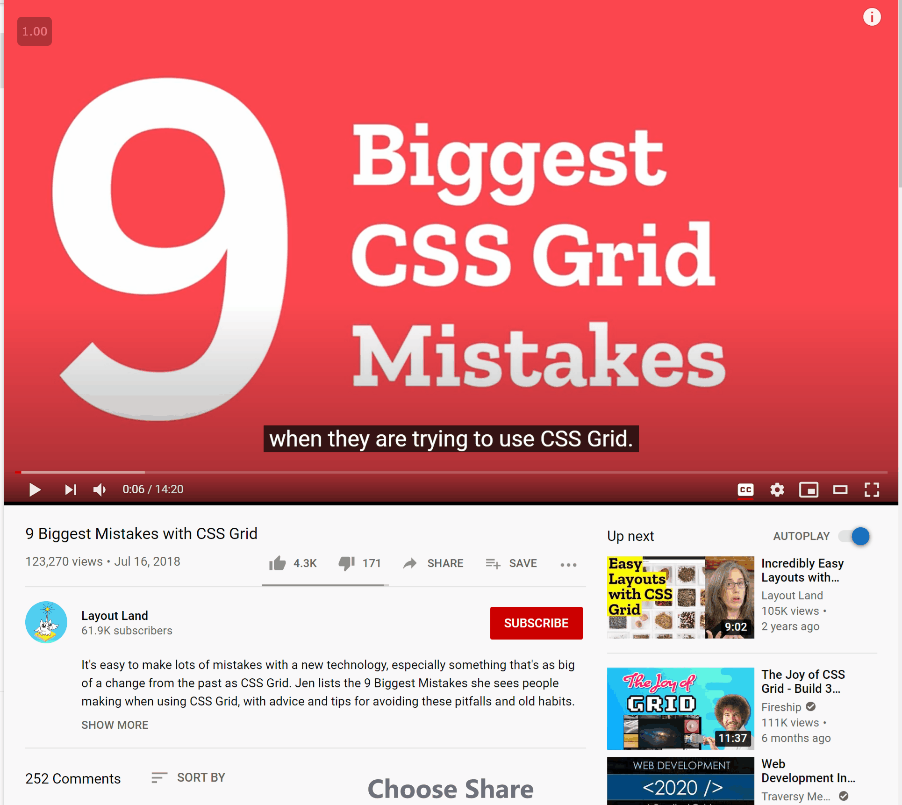

HTML Essentials
Learnings from Jen Simmons course on LinkedIn Learning
Vebash Naidoo
02/09/2020
Last updated: 2020-10-26
Checks: 7 0
Knit directory: r4ds_book/
This reproducible R Markdown analysis was created with workflowr (version 1.6.2). The Checks tab describes the reproducibility checks that were applied when the results were created. The Past versions tab lists the development history.
Great! Since the R Markdown file has been committed to the Git repository, you know the exact version of the code that produced these results.
Great job! The global environment was empty. Objects defined in the global environment can affect the analysis in your R Markdown file in unknown ways. For reproduciblity it’s best to always run the code in an empty environment.
The command set.seed(20200814) was run prior to running the code in the R Markdown file. Setting a seed ensures that any results that rely on randomness, e.g. subsampling or permutations, are reproducible.
Great job! Recording the operating system, R version, and package versions is critical for reproducibility.
Nice! There were no cached chunks for this analysis, so you can be confident that you successfully produced the results during this run.
Great job! Using relative paths to the files within your workflowr project makes it easier to run your code on other machines.
Great! You are using Git for version control. Tracking code development and connecting the code version to the results is critical for reproducibility.
The results in this page were generated with repository version b7ebd72. See the Past versions tab to see a history of the changes made to the R Markdown and HTML files.
Note that you need to be careful to ensure that all relevant files for the analysis have been committed to Git prior to generating the results (you can use wflow_publish or wflow_git_commit). workflowr only checks the R Markdown file, but you know if there are other scripts or data files that it depends on. Below is the status of the Git repository when the results were generated:
Ignored files:
Ignored: .Rproj.user/
Untracked files:
Untracked: analysis/ch10_relations_dplyr.Rmd
Untracked: analysis/images/
Untracked: code_snipp.txt
Note that any generated files, e.g. HTML, png, CSS, etc., are not included in this status report because it is ok for generated content to have uncommitted changes.
These are the previous versions of the repository in which changes were made to the R Markdown (analysis/html_learnings.Rmd) and HTML (docs/html_learnings.html) files. If you’ve configured a remote Git repository (see ?wflow_git_remote), click on the hyperlinks in the table below to view the files as they were in that past version.
| File | Version | Author | Date | Message |
|---|---|---|---|---|
| html | 8224544 | sciencificity | 2020-10-26 | Build site. |
| html | 2f8dcc0 | sciencificity | 2020-10-25 | Build site. |
| html | 61e2324 | sciencificity | 2020-10-25 | Build site. |
| html | 570c0bb | sciencificity | 2020-10-22 | Build site. |
| html | cfbefe6 | sciencificity | 2020-10-21 | Build site. |
| html | 4497db4 | sciencificity | 2020-10-18 | Build site. |
| html | 1a3bebe | sciencificity | 2020-10-18 | Build site. |
| html | ce8c214 | sciencificity | 2020-10-16 | Build site. |
| html | 1fa6c06 | sciencificity | 2020-10-16 | Build site. |
| Rmd | 3b67e92 | sciencificity | 2020-10-16 | completed ch 3 |
| html | 9ae5861 | sciencificity | 2020-10-13 | Build site. |
| html | 76c2bc4 | sciencificity | 2020-10-10 | Build site. |
| html | 226cd16 | sciencificity | 2020-10-10 | Build site. |
| html | ceae495 | sciencificity | 2020-09-17 | Build site. |
| Rmd | fd25a9a | sciencificity | 2020-09-17 | added html learnings |
| html | b8fde7d | sciencificity | 2020-09-13 | Build site. |
| Rmd | 4747fc8 | sciencificity | 2020-09-13 | added WIP html page |
| html | 0bab89d | sciencificity | 2020-09-12 | Build site. |
| Rmd | a47f1a3 | sciencificity | 2020-09-12 | completed ggplot exercises |
| html | 720a89b | sciencificity | 2020-09-02 | Build site. |
| html | 4612bb8 | sciencificity | 2020-09-02 | Build site. |
| Rmd | 7305596 | sciencificity | 2020-09-02 | added new misc section |
The web was built to allow humans to share content even though our computers are different from each other.
This is made possible by 3 different programming languages each doing a part of the job.
HTML
HTML marks up the content of a site.
- It tells the users computer what things are.
- It gives access to built in functionality of the browser that you can harness as a developer.
- Its all declarations.
- HTML can take a lot of abuse but still work.
CSS
CSS stands for Cascading Style Sheets
- Provides visual styling and layout for everything on a web page.
- Makes each page look the way it looks - colour, typography and size.
- Can add simple interactions and animations through CSS.
- If something goes wrong in CSS the browser will skip just that section of code and not apply that styling, but it will apply all the rest.
JavaScript
JavaScript is a programming language that provides the ability to create more powerful interactivity.
- Most powerful
- Used to make more interactive sites
- Also most fragile - if something goes wrong / browser too old to know what the code means the browser will stop. It gives up. It does not guess what to do.
Bold and Italics
There are 2 tags for bold and 2 tags for italics. But why?
Italics
Take the sentence:
My favourite show is Sesame Street.
favourite showis emphasised here because it has a strong sentiment attached. Verbally emphasised<em>tag here foremphasis italics.Sesame Streetis however emphasised because it is the name of the show. Visually emphasised<i>tag here forvisual-only italics.
We’re conveying semantic meaning here, and these provide very different results for anyone listening to the content.
My <em>favourite</em> character from <i>Sesame Street</i> is Grover. gets translated as:
My favourite character from Sesame Street is Grover.
Bold
- The
<strong>suggests importance, urgency, or seriousness. Like the<em>tag it conveys meaning, there is an alternative voice / mood here. - The
<b>tag is instead like the<i>tag, it is used for visual emphasis. There isn’t a change in mood when using this tag.
<h3><strong>WARNING!</strong> Do not be late.</h3> gets translated as:
WARNING! Do not be late.
<p>This is a paragraph of text. We want people to be able to scan it relatively quickly, but we also <b>want to mark certain sections with some boldness</b> so that it has some visual attention for the reader.</p> gets translated as:
This is a paragraph of text. We want people to be able to scan it relatively quickly, but we also want to mark certain sections with some boldness so that it has some visual attention for the reader.
Lists
There are 3 types of lists. We use lists on the web for things that don’t even look like lists - e.g. Navigation bars is a list of links. Lists can be used to markup navigation. While lists are normally used to present content, their structured and nestable semantics also make them good for navigation menus.
- Unordered lists
- Ordered lists
- Definition lists
<li>stands for list item<ul>stands for unordered list and we wrap the entire list of items in this tag to mark where the list starts and where it ends.<ol>stands for ordered list, and we use this for steps in a recipe for example. 1, then 2, then 3 etc.<dl>is used for kind of key-value pairs where we have an item / term and then we have a description for that term.<dt>is used for the term<dd>is used for the definition / decription of the term.
<br> <ul> <li>flour</li> <li>sugar</li> <li>baking soda</li> <li>vanilla essence</li> <li>2 eggs</li> </ul> <br>
Gets translated as:
- flour
- sugar
- baking soda
- vanilla essence
- 2 eggs
<ol> <li>Mix the dry ingredients.</li> <li>In a separate bowl mix the eggs and the vanilla essence.</li> </ol> <br>
Gets translated as:
- Mix the dry ingredients.
- In a separate bowl mix the eggs and the vanilla essence.
<dl> <dt>Unordered list</dt> <dd>For grouping a collection of items that do not have numerical ordering. Their order in the list is meaningless.</dd> <dt>Ordered list</dt> <dd>For an ordered list of items, typically rendered as a numbered list. Here order is meaningful.</dd> <dt>Definition list</dt> <dd>For creating a group of terms and descriptions.</dd> </dl> <br>
Gets translated as:
- Unordered list
- For grouping a collection of items that do not have numerical ordering. Their order in the list is meaningless.
- Ordered list
- For an ordered list of items, typically rendered as a numbered list. Here order is meaningful.
- Definition list
- For creating a group of terms and descriptions.
Quotes
Let’s turn this paragraph into a quote:
We’ve gone from having 21 elements in HTML tags, that first document, to having 100 more elements now, and yet it’s still the same language. I find that amazing. It’s still the same language that was created 25 years ago. It’s grown an extra 100 elements in there, and yet it’s still the same language. — Jeremy Keith- We can put everything in
<p>tags because it’s a paragraph. - We can add Jeremy Keith as the author of the quote by wrapping his name in
<cite>. - We can add everything in a
<blockquote>to indent it nicely. - If you just want to quote someone in the middle of a piece of text - i.e. not a blockquote you can do that by adding
<q>around the quote.
<blockquote> <p> We’ve gone from having 21 elements in HTML tags, that first document, to having 100 more elements now, and yet it’s still the same language. I find that amazing. It’s still the same language that was created 25 years ago. It’s grown an extra 100 elements in there, and yet it’s still the same language. </p> <cite>— Jeremy Keith</cite> </blockquote>
Gets translated as:
We’ve gone from having 21 elements in HTML tags, that first document, to having 100 more elements now, and yet it’s still the same language. I find that amazing. It’s still the same language that was created 25 years ago. It’s grown an extra 100 elements in there, and yet it’s still the same language.
— Jeremy Keith
<p>Jeremy Keith said, <q>You could open an HTML document from back then in a browser today.</q></p>
Gets translated as:
Jeremy Keith said, You could open an HTML document from back then in a browser today.
Inline elements
There are some HTML that is meant to be inline. They’re meant to be wrapped around phrases of content that is inline with other content. Goes inside bigger things.
<q><strong><b><i><em>
Block-level elements
These are HTML elements that start a new block. These are the bigger things.
<blockquote><p><ol>,<ul>,<dl>
Dates
- HTML has one element to mark a date, datetime, span of time.
<time>element.- Example.
- We can use any human readable format.
- The whole point of the tag is to convey to the computer what date and time this is. For this we use an HTML attribute.
- For datetime elements that a computer can then understand we use
<elementname attributename="">e.g. here<time datetime="2025-05-08">as an example. - The time inside the
<time datetime = "">attribute needs to be in a specific format. - Machine readable version of Date: YYYY-MM-DD e.g.
<time datetime="2021-10-05"> - Machine readable version of Time: hh:mm:ss.ddd in 24 hr clock format e.g.
<time datetime="20:15"> - Machine readable version of Time with TZ: hh:mm:ss.ddd+-hh:mm e.g.
<time datetime="15:45-05:00">which means 3:45pm in the TZ that is -5 hours from GMT (UTC). - Both date and time:
<time datetime="2021-11-04 15:45-05:00>, with or without a T in between [<time datetime="2021-11-04T15:45-05:00>]
<time datetime=“2021-05-08”>on the 8th of May next year</time> renders as
Code
- Sometimes you want some code to stand out. Use
<code>to make a bit of text styling change.
In the below text <code>{color:green;}</code> will change that part of the text.
We can write {color:green;} in our CSS, and it will apply to anything marked up as an <H4> element.
Aside: HTML Entities
- Sometimes we want to write about HTML but we don’t want it to be interpreted.
- Need to print out the
<sign instead of having it be interpreted. We can do this by using the<entity. - For
>we use>. <pre>keeps the formatting as you specified.<br>inserts a line break.
Superscripts, Subscripts and Small Text
<sub>for subscript.<sup>for superscript.
H2O looks wrong like this.
<p>H<sub>2</sub>O looks wrong like this.</p>
If we use the <sub> tag we get:
H2O looks correct now.
<p>Something that has a footnote<sup>2</sup>
Something that has a footnote2
The <pre> element is used for listings where line breaks and other white space need to be preserved, while <code> is more for short snippets inside of other content.
is for subscripts, like numbers in chemical formulas, and is for superscripts, like footnote markers.
Attributes
Some attributes only work on certain elements e.g.
datetimeonly used withtimetagOther attributes work on several elements.
And yet others are global attributes and may be applied to any HTML element.
class: Gives us a way to attach a reusable name to any element. Then we can target all elements with that class in our CSS or JavaScript. It allows us to name certain elements and refer to them in other parts of our code.<p class ="intro"> This is the introduction </p>id: Similar toclassbut we’re only allowed to use unique names once in an entire HTML page. We can use an ID for targeting CSS or JavaScript for a unique element with thatid, but because it is so specific most of the times developers stick toclass. It is particularly useful to target with JS or a targeted link. It also allows us to name certain elements and refer to them in other parts of our code.<p class ="intro" id="article-intro"> This is the introduction </p>contenteditable: Let’s a user do things. Herecontenteditable = trueallows a visitor to a page to edit the contents. When the visitor does change something it doesn’t last (e.g. refreshing the browser will change it back to the original). That’s because HTML allows you to edit the content but more work is needed to capture and save the content the user enters.<blockquote contenteditable="true"> Edit this content to add your own quote. </blockquote>Edit this content to add your own quote.
langanddir:langtells the browser what language the content is in.<p lang="en-GB"> We say colour, and visualisation when using British english :) </p> <p lang="fr"> Nous disons couleur et visualisation lors de l'utilisation de l'anglais britannique :) </p> <p dir="ltr"> In english the paragraph flows from left to right. </p> <p dir="rtl"> في اللغة العربية تتدفق الفقرة من اليمين إلى اليسار. </p>
ARIA roles
ARIA roles are another type of attribute that can be added to any HTML element to give it more meaning and to ensure the browser understands what something is. Ideally we won’t need an ARIA role, if we use the right elements we’ll communicate the right message about the semantics of the content.
Sometimes we make compromises in our markup and then we need to be cognisant of people using our site, especially people with a disability - we want our site to be accessible by all people.
ARIA roles are HTML attributes that provide accessible info about that specific element. It tells screen readers, braille displays, magnifiers and other assistive technology things they need to know to make a site fully accessible.
ARIA is used to clarify to the accessibility tree what is happening with a particular element, set of elements, or interface. If something is broken, ARIA can be a way to fix it.

Jen built the above webpage that says “Hello World” but due to the targeted CSS each letter is in its own text box. The experience for a person using a screen reader will be particularly bad (have a look at the Accessibility window in the inspector to see the issue). Instead of saying “Hello World” it will say “H” “E” “L” “L” “O” “W” “O” “R” “L” “D”.
<h1>
<div class="grid">
<span>H</span>
<span>e</span>
<span>l</span>
<span>l</span>
<span>o</span>
<span>w</span>
<span>o</span>
<span>r</span>
<span>l</span>
<span>d</span>
</div>
</h1>
She fixed it by adding an ARIA role to the headline so that a screen reader can read “Hello World”, and then she hid the individual letters by setting aria-hidden="true" which hides that element and all its children from the accessibility tree. It’s still in the DOM tree.
We want the headline to be seen by the Accessibility tree, but we don’t want the individual letters to be seen and read by the Accessibility tree. Hence wrap all the spans in a div and add the aria-hidden="true" on the div.
<h1 aria-label="Hello World"> <div class="grid" aria-hidden="true"> <span>H</span> <span>e</span> <span>l</span> <span>l</span> <span>o</span> <span>w</span> <span>o</span> <span>r</span> <span>l</span> <span>d</span> </div> </h1>
Formatting HTML
- Comments are between
<!--and-->tags e.g.<!--This is a comment and will be ignored-->
<: <>: >&: &©: the copyright symbol ©™: the trademark symbol ™☆: the star symbol ☆ : insert a non-breaking space (usually the browser views any space) as a place it can wrap text. This tells the browser - hey, don’t break here.
Links
To make a link we use the <a> element as in <a href="https://link-ref.co.za"></a> which stands for anchor. On the opening tag we need an href="link address" to tell the browser where we want it to go. href stands for HyperText reference.
The href can have:
Absolute URL which includes
http://orhttps://.Links into other parts of your site can have absolute path.
On the same site - we can use relative URL because it is easier for testing etc.
To use relative path to things in our own site we need to understand the structure of our folders.
Imagine we have our images in its own folder. We can access an image through either:
/images/logo.gif: Start at root and go to images and get the gif.../images/logo.gif: From where we are go up to the folder I am in, then go up again. Ok, now go to images and get the gif.
Everytime a browser is given a URL that points to go to a folder e.g.
https://myawesomeweb.co.za/team/the browser automatically looks for and loadsindex.html.index.htmlis a special file and makes it so we can have different folders with anindex.htmlfile in each of them.
All of these will link to the same place:
<li><a href="/people/index.html">People</a></li> <li><a href="/people/">People</a></li> <li><a href="/people">People</a></li>
Images
- We use the
<imgtag. - <img src=xxx.jpg" alt=“description of img” width=“400” height=“300”>
- There are a few attributes we’d like with this:
srcwhich is source attribute tells the browser which image to display. - The
altattribute describes the picture and acts as a substitute when the image can’t be seen. It also helps for people who have visual disabilities to understand what the picture is showing. Blind people may use a screen reader that reads the alt text aloud to them. - The
widthandheightattributes tell the browser the size of the picture in pixels. This allows the browser to have a headstart in defining the layout of the page. Otherwise the browser first has to load the image and then needs to figure out how big it must be. If we tell the browser these element sizes that helps with the rendering of the page.

- Goal for images: High quality + small size images. Aim is to make them download as fast as possible.
- If you have JPG files you should resize them for the web since they are big and will take a long time to load.
- PNG: Good at compression, and good for pictures that need transparency.
Pictures
When you want the image to be shown to be different depending on the screen the user is using you can wrap the data in an <picture> tag with a <srcset>.
The <picture> element gives you the flexibility you need to change content as well as image size. The srcset attribute lets the browser choose from options that fit the specific situation, minimizing bandwidth consumption while producing attractive results.
<picture>
<source media="(min-width:600px)"
srcset = "https://s3-us-west-2.amazonaws.com/s.cdpn.io/10558/dog-960.jpg">
<source srcset = https://s3-us-west-2.amazonaws.com/s.cdpn.io/10558/dog-480.jpg>
<img src="https://s3-us-west-2.amazonaws.com/s.cdpn.io/10558/dog-480.jpg"
alt="shiny black dog looking pensive"
width="480" height="360">
</picture>

Caption images
- We can caption an image if we use
<figcaption>tag. - We can wrap the entire img and figcaption in a
<figure>tag.
<figure> <img src="https://s3-us-west-2.amazonaws.com/s.cdpn.io/10558/maggie2.png" width="960" height="720" alt="shiny black dog in the sun"> <figcaption>Maggie the dog enjoys resting in a field, after a long day of chasing squirrels.</figcaption> </figure>

Audio
- We can use the
<audio></audio>element to put audio on a page. - Can trigger the browser to create an audio player interface for us.
- Just like with
<img>use thesrcattribute to provide the link to the file e.g.src="file.mp3". - We use the
controlsattribute to tell the browser that we’d like it to provide some controls such as volume, play btn etc. - We may also provide our own custom controls instead of those in built into the browser.
- loop: will cause the audio to play again from the beginning
<audio controls src="some_file.format" loop></audio> - autoplay: causes audio to be played as soon as the page loads. BE CAREFUL WITH THIS ONE: Most people hate autoplaying audio, myself included!!
<audio controls src="some_file.format" loop autoplay></audio>
<audio controls
src="https://s3-us-west-2.amazonaws.com/s.cdpn.io/10558/birds.mp3">
</audio>
- We can use the source element to specify more than one audio file. The browser will use the first file in the list that it understands. The last line is some fallback text that is only displayed if the browser has no idea how to play any of the supplied audio alternatives.
<audio controls>
<source
src="http://example.com/birds.ogg"
type="audio/ogg; codec=opus">
<source
src="https://s3-us-west-2.amazonaws.com/s.cdpn.io/10558/birds.mp3"
type="audio/mpeg">
Sorry your browser doesn't not support audio.
</audio>
Video
- We can use the
<video></video>element to put video on a page. - Can trigger the browser to create a video player interface for us.
- Just like with
<img>use thesrcattribute to provide the link to the file e.g.src="file.mp4". - We use the
controlsattribute to tell the browser that we’d like it to provide some controls such as volume, play btn etc.
<video controls
src="xxx.mp4">
</video>
- There are a few things we need to do because of how video is encoded.
- H.264 codec is the most widely supported across different browsers but it is not open source. It is owned by a consortium that charges fees whenever you use that codec on a device, on a page etc.
- AV1 is royalty free but it is still new.
- We can use
<source>in video as well. - We don’t have a
srcsetattribute for video though. - That’s because we don’t want the browser to make a choice only once between standard def and high def for example. We want it to make that choice over and over again.
- YouTube etc. works this way using a technique called adaptive bitrate streaming whereby it keeps switching the resolution based on the connection attributes at the time.
- When we put video on a page we more likely will use an embedding hosting service instead of putting video via the
<video></video>tag.
Captioning
Not everyone can hear or understand the audio.
Occassionally people may be in a place they can’t actually use the speakers.
Or perhaps the speakers cadence is different to what you’re accustomed to (perhaps they’re speaking too fast for you to keep up), or they’re speaking in English, but that is not your mother tongue.
We can provide content in multiple ways simultaneously.
To make our video / audio more accessible we can use the
<track>element and point to a text file.The video player provides the functionality so that a user can turn captioning on and off, or can switch between languages.
We use webvtt (web video text tracks) which is a plain text file with a vtt extension.
- kind: tells browser this is captions.
- label: tells browser what the label for this choice should be e.g.
label="english". - srclang: tells browser what the captioning language is e.g.
srclang="en" - default: tells browser that these are the default captions to use when a user turns on captioning.
<video controls>
<source src="https://s3-us-west-2.amazonaws.com/s.cdpn.io/10558/moonwalk.480p.vp9.webm"
type="video/webm">
<source src="https://s3-us-west-2.amazonaws.com/s.cdpn.io/10558/moonwalk.480p.h264.mp4"
type="video/mp4">
<track src="https://s3-us-west-2.amazonaws.com/s.cdpn.io/10558/moonwalk.vtt"
kind="captions"
label="English"
srclang="en"
default>
<track src="https://s3-us-west-2.amazonaws.com/s.cdpn.io/10558/moonwalk.es-la.es.vtt"
kind="subtitles"
label="Español"
srclang="es">
<p>This would be a video of a moonwalk, if your device supported playing this video.</p>
</video>
Embedding using iframes
- Go to someone elses toolkit and use that and embed it in your website.
- Go to a video - click Share and then Embed.
- Below we go to a YouTube video to get the code to embed here. Note: The
Enable privacy-enhanced mode.does not allow the video to be displayed in Rmd

Target part of the DOM
- Sometimes you just want a way to target an area of your HTML with CSS or JS but no other element makes sense…enter the
<div>and<span>elements. <div>: block level element.<span>: inline element.- They both do the same thing - nothing - until you point JS or CSS at them.
- The div and span elements make it easy to create containers or labeled content for styling.
HTML Page
- To tell the browser this is a modern HTML document we use the
<!doctype html>element right at the top of our page. - To tell the browser we’ve got an HTML page we use the
<html></html>tags around our entire content e.g.<html dir="ltr" lang="en-us">. Remember thatdir=tells the browser which direction the text flows, andlang=tells the browser what language your page is in. - Meta data, for example your information about your character set (
charset=) goes in the<head></head>element. titlein head: is not content, but rather is what shows up on the browser tab, or the bookmarked site name.meta name="viewport": Tells the browser that content has been morphed to fit smaller screens (i.e. it is a responsive website).meta name="description": Is what shows up in search engine results.link rel="stylesheet" href="main.css": Tells the browser where to link to for other assets we want to load like CSS files, fonts, favicons etc.reltells the browser what type of asset it is.hrefprovides the URL to the asset.- The browser will load things in the order they are listed so put things you want to load first at the top.
<script src="my-js-file.js"></script>: Tells the browser to load a JS file. This is often put at the end of the document instead of in the head so that the JS is loaded last.
<head>
<title>An Important Title :)</title>
<meta charset="utf-8">
<meta name="viewport" content="width=device-width, initial-scale=1">
<meta name="description" content="A description that'll show up on search engines results.">
<link rel="stylesheet" href="css/S11-02.css">
</head>
Structuring content
- The
<main>element wraps around the main content of the page. Only used once per page. - The
<header>and<footer>elements are used to mark content that is a header or footer.<header>is used usually for logo, site name etc. - The
<footer>element does not have to go at the bottom of the page - it is used to convey additional info - hey, we have a few extra things to say about this. <article>is wrapped around things like a blog post, or it may even be a short snip. It could be used for teaser cards. It’s semantic meaning is hey this by itself is a unit of content.<section>is for sections of content. If we have a long essay for example with different sub-headlines we may have sections around segments of them. We may also have zones on our website. It’s semantic meaning is hey let’s just start with another thing.<aside>: used to markup something that is off to the side, content that is not the main attraction. Its semantic meaning is hey, this thing is useful but not the main attraction.
Forms
Check out Chapter 9 here.
- What’s the difference between the value attribute and the placeholder attribute? The value attribute fills the field with a value that will be submitted with the form. The placeholder shows a suggestion, but doesn’t really enter it.
Table
| Element | Name | Purpose | Attributes |
|---|---|---|---|
|
<table> </table> |
Table | Wraps the whole table | |
| <tr></tr> |
TR - table row |
Wraps around a set of elements, defining them as belonging to the same row |
colspan, rowspan, headers |
| <th></th> |
TH - table header |
Defines a header for a column |
colspan, rowspan, scope |
| <td></td> |
TD - table data |
Marks the actual bits of data |
sessionInfo()R version 3.6.3 (2020-02-29)
Platform: x86_64-w64-mingw32/x64 (64-bit)
Running under: Windows 10 x64 (build 18363)
Matrix products: default
locale:
[1] LC_COLLATE=English_South Africa.1252 LC_CTYPE=English_South Africa.1252
[3] LC_MONETARY=English_South Africa.1252 LC_NUMERIC=C
[5] LC_TIME=English_South Africa.1252
attached base packages:
[1] stats graphics grDevices utils datasets methods base
other attached packages:
[1] workflowr_1.6.2
loaded via a namespace (and not attached):
[1] Rcpp_1.0.4.6 rprojroot_1.3-2 digest_0.6.25 later_1.0.0
[5] R6_2.4.1 backports_1.1.6 git2r_0.26.1 magrittr_1.5
[9] evaluate_0.14 stringi_1.4.6 rlang_0.4.7 fs_1.4.1
[13] promises_1.1.0 whisker_0.4 rmarkdown_2.4 tools_3.6.3
[17] stringr_1.4.0 glue_1.4.1 httpuv_1.5.2 xfun_0.13
[21] yaml_2.2.1 compiler_3.6.3 htmltools_0.5.0 knitr_1.28